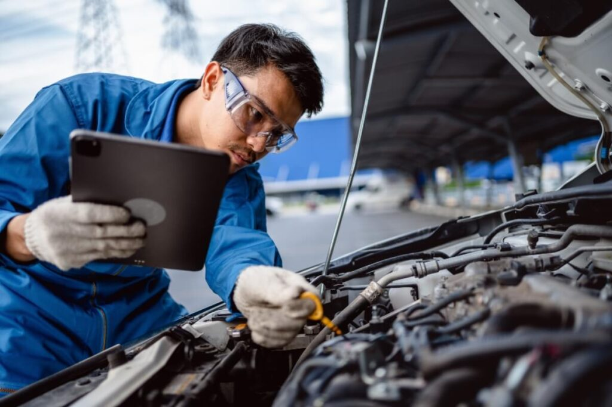

¿Qué es la Mecánica Automotriz?
La mecánica automotriz es una disciplina técnica que se enfoca en el estudio, diagnóstico, reparación y mantenimiento de vehículos. Aquí aprenderás todo sobre motores, frenos, sistemas eléctricos, inyección electrónica, suspensiones, transmisiones y más.
- 🔧 Reparación y diagnóstico de fallas mecánicas y eléctricas.
- 🛞 Revisión de sistemas de suspensión, dirección y frenos.
- ⚙️ Montaje y desmontaje de motores y cajas de cambio.
- 🔋 Evaluación de sistemas electrónicos modernos (sensores, ECU, etc.).
- 🚗 Conocimiento profundo de las partes que hacen funcionar un auto.
¿Dónde se Aplica la Mecánica Automotriz?
La formación en mecánica te permite desarrollarte profesionalmente en múltiples áreas del mundo automotor, tanto en talleres como en empresas grandes.
- 🔧 Talleres automotrices: reparación general y especializada.
- 🏭 Concesionarios: mantenimiento preventivo y correctivo de flotas.
- 🚘 Inspección técnica vehicular: revisión de normas y seguridad.
- 📦 Empresas de repuestos: asesor técnico y soporte mecánico.
- 🧰 Emprendimiento: abrir tu propio taller y ser tu propio jefe.
¿Por Qué Estudiar Mecánica Automotriz?
Estudiar esta carrera técnica es una gran oportunidad para quienes disfrutan los autos y buscan una profesión práctica, rentable y en constante evolución.
- ✅ Alta empleabilidad: los mecánicos son siempre necesarios.
- ✅ Formación práctica: desde el primer día trabajas con vehículos reales.
- ✅ Posibilidades de negocio propio: abre tu propio taller o servicio móvil.
- ✅ Contribuyes a la seguridad vial: un buen mecánico salva vidas.
- ✅ Aprendes habilidades útiles para la vida: puedes arreglar tu propio auto.
¿Te apasionan los motores, la tecnología automotriz y trabajar con tus manos? ¡Esta carrera es para ti! Forma parte del mundo que mantiene a millones de personas en movimiento cada día.
